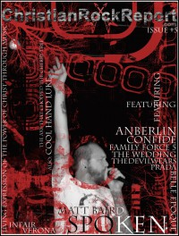

CMnexus
: Contemporary Christian culture, music, and media.
|
Christian Rock Report2007, #5
| Cover |
|---|
|  | | Writers in this Issue |
|---|
Anderson, Chris
Boehm, Carla
Boehm, Teddy
Cosÿns, Derek
Faircloth, Savannnah
Fisher, Matt
Hedges-Lyon, Rebecca
Lowry, Daryl Ann
Minibrick
Paul, Joshua
Porter, Blake
Ramírez, Ady Núñez
Romesburg, Laura C.
Van Zandt, Heather
Warden, Rick E.
|
Spoken (Matt Baird)Cover Feature:Article:We Are The Underground:National Band News:Christian Rock Bands:Album Review:Editorials, opinion, and commentary:
- "Are You a Runaway?" by Blake Porter
Resurrection Thunder:
- "Turtle,.. Turtle,.. Master Of Disguise!"
|
|
<>